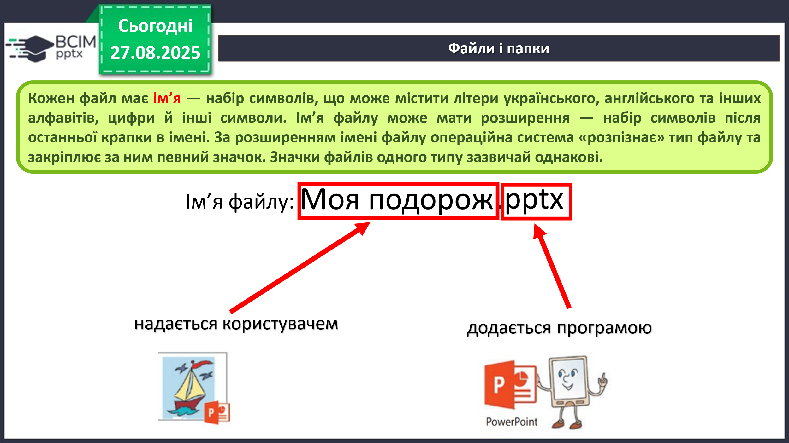
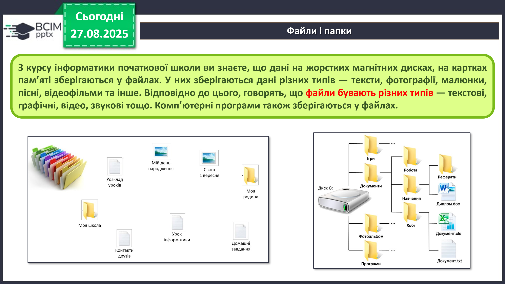
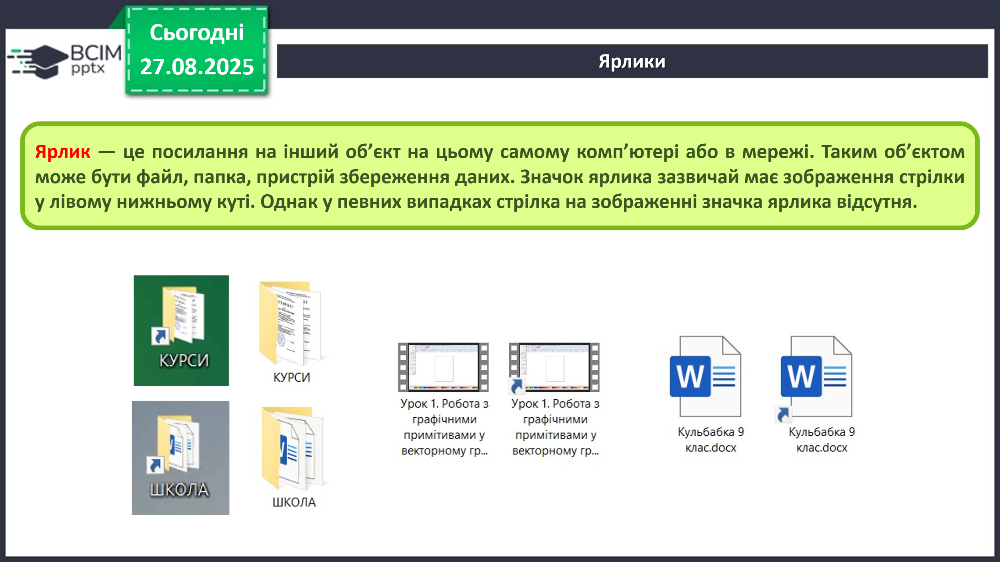
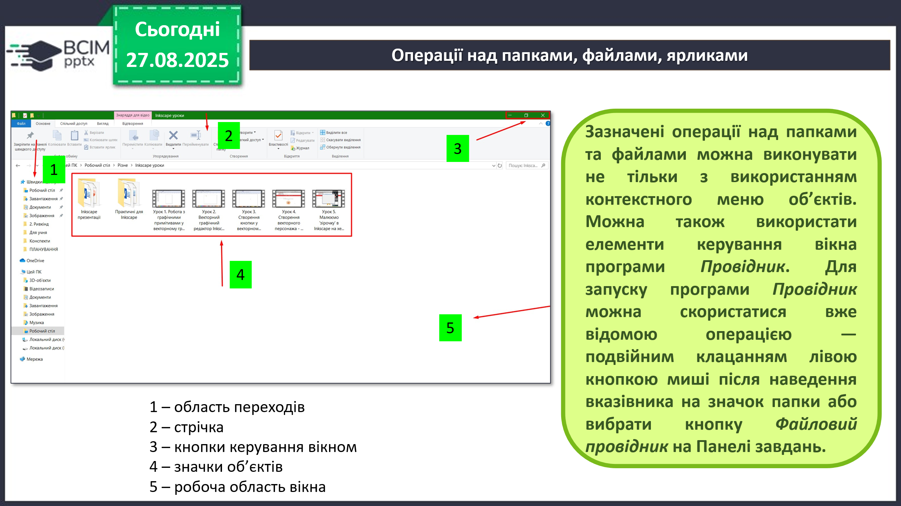
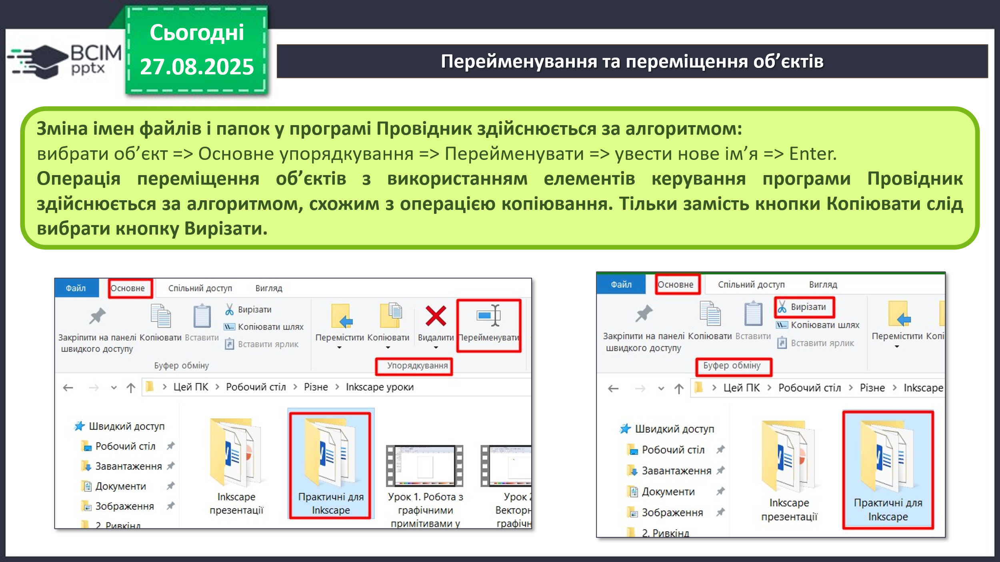
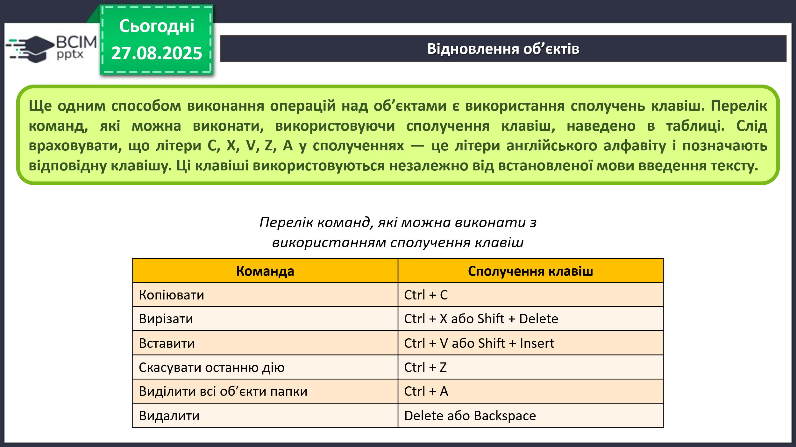
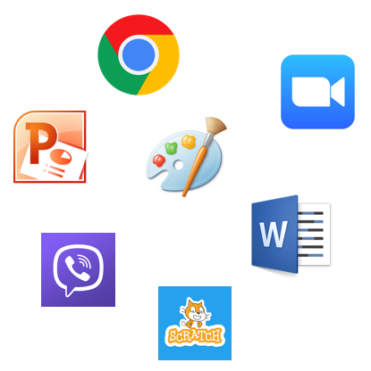

HUB 56 · 5 клас · Урок №8
Операційна система, її призначення
Файли й папки, операції над ними. Прикладні комп’ютерні програми.
Операційна система
Комп’ютерна програма — це алгоритм, призначений для виконання комп’ютером. Особливе місце серед програм займає операційна система (ОС). Без неї робота сучасного комп’ютера неможлива.
Операційна система керує роботою пристроїв, забезпечує запуск програм, зберігання даних та взаємодію користувача з комп’ютером. Приклади ОС: Windows, macOS, Android, ChromeOS.
Інтерфейс користувача — це засоби та правила, за допомогою яких користувач подає команди й отримує повідомлення про результат. Графічний інтерфейс часто описують скороченням WIMP: windows — вікна, icons — значки, menus — меню, pointer — вказівник.
Файли та їхні імена
Файл — це іменована сукупність даних, що зберігається на носії. У файлах можуть бути тексти, фотографії, малюнки, звук, відео або програми.
Кожен файл має ім’я. Після останньої крапки може міститися розширення імені файлу. Воно допомагає операційній системі визначити тип файлу та програму, у якій його слід відкрити. Наприклад: Моя подорож.pptx, де «Моя подорож» — ім’я, а «pptx» — розширення.

Папки та ярлики
Папка, або каталог, допомагає впорядкувати файли. Папки можуть містити інші папки, утворюючи дерево папок. Назва папки має підказувати, які матеріали в ній зберігаються.

Ярлик — це посилання на файл, папку або пристрій. Він не є копією об’єкта. Значок ярлика зазвичай має маленьку стрілку в нижньому лівому куті.

Провідник та операції над об’єктами
Файловий провідник — програма для перегляду та впорядкування файлів і папок. У його вікні є область переходів, панель команд, кнопки керування вікном, значки об’єктів і робоча область.

Над файлами та папками виконують операції: створення, копіювання, переміщення, перейменування, видалення та відновлення. Для переміщення використовують команду Вирізати, а для копіювання — Копіювати.

Після звичайного видалення з локального диска об’єкт зазвичай потрапляє до Кошика, звідки його можна відновити. Файли, видалені зі змінних носіїв, можуть не потрапляти до Кошика.

Прикладні комп’ютерні програми
Прикладні програми загального призначення використовують у різних галузях для роботи з текстами, малюнками, презентаціями, таблицями та мультимедіа.
Прикладні програми спеціального призначення створені для певної професії або установи: проєктування механізмів, медичної діагностики, створення відеоефектів чи шкільного розкладу.
Системи програмування призначені для створення програм мовами програмування. Приклади: Scratch, Python, Lazarus та інші.
